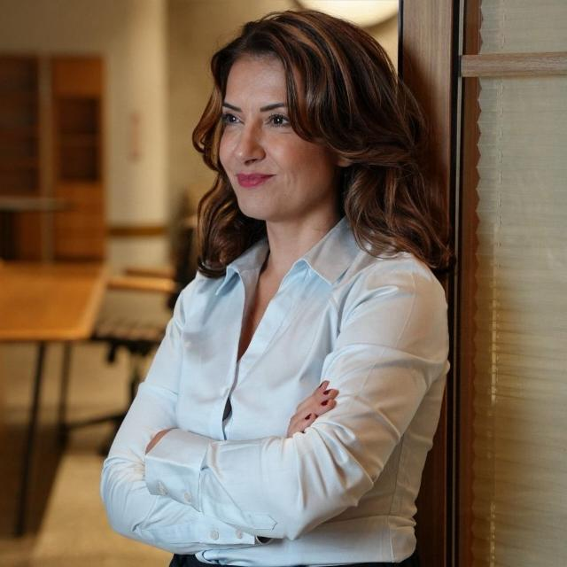

Women
Empowerment
OWN YOUR SUCCESS · OWN YOUR FEMININITY
From Potential to Power
Kadınlar için iki günlük güçlenme ve farkındalık eğitimi
Başarını sahiplen. Kendine de alan aç.
İş hayatında ürettiğiniz değeri görünür kılarken kendi ihtiyaçlarınıza, duygularınıza ve kadınlık deneyiminize de alan açmak mümkün. Bu iki günlük eğitimde, profesyonel yaşamınızda sesinizi daha net duyurmanın ve kendinizle bağınızı güçlendirmenin yollarını birlikte keşfedeceğiz.
İlk gün başarılarınızı sahiplenmeye, emeğinizi görünür kılmaya ve kendinizi güvenle ifade etmeye odaklanacağız. İkinci gün ise sürekli güçlü olma beklentisini, üstlendiğiniz rolleri ve kişisel ihtiyaçlarınızı ele alarak size iyi gelen denge üzerine çalışacağız.
İhtiyacınıza göre tek bir güne katılabilir veya birbirini tamamlayan iki modülü birlikte deneyimleyebilirsiniz.
Profesyonel kadınlar
Kariyerinde daha görünür olmak, katkılarını daha rahat anlatmak, zor konuşmalardan kaçınmamak, kendini doğru şekilde ifade etmek ve iş yaşamının beklentileri arasında kendine de yer açmak isteyen kadınlar için.
Deneyimleyerek öğrenme
Psikoloji temelli yaklaşımları gerçek iş hayatından örnekler, bireysel farkındalık çalışmaları, iletişim uygulamaları ve grup paylaşımlarıyla bir araya getireceğiz. Paylaşımın gönüllülüğe dayandığı etkileşimli bir öğrenme ortamı sunacağız.
Görünür ol. Gücünü sahiplen. Dengeni bul.
İki günün ayrıntıları
OWN YOUR SUCCESS
Başarını Sahiplen. Sesini Duyur. Görünür Ol.
Profesyonel Kadınlar İçin 1 Günlük Psikolojik Güçlenme ve Profesyonel Görünürlük Eğitimi
Çok çalışıyor, sorumluluk alıyor ve değer üretiyor olabilirsiniz. Peki, katkılarınızın ne kadarı görülüyor? Başarılarınızı anlatırken kendinizi övüyormuş gibi hissediyor, fikriniz başkası tarafından dile getirildiğinde sessiz kalıyor ya da zor bir konuşmayı erteliyor olabilirsiniz.
Bu eğitimde, yaptığınız işin değerini açıkça anlatmanın ve emeğinize sahip çıkmanın yollarını ele alacağız. Amacımız, kendinize uygun bir iletişim dili geliştirerek iş hayatında daha fazla söz sahibi olmanızı desteklemek.
Neden kadınlara yönelik?
Başarıyı anlatmak ve görünür olmak herkes için önemli. Kadınlar açısından bu süreç, toplumsal beklentiler ve nasıl algılanacaklarına ilişkin kaygılarla iç içe geçebiliyor. Bu deneyimleri konuşabileceğimiz, birbirimizden öğrenebileceğimiz ve farklı yaklaşımları deneyebileceğimiz bir alan açıyoruz.
Bu eğitimde neler var?
- Self-Marketing: Kendinizi övüyormuş gibi hissetmeden başarılarınızı ve yarattığınız değeri anlatmak.
- Own Your Success: Başarılarınızı küçümsemeden sahiplenmek.
- Protect Your Contribution: Fikirlerinizin ve emeğinizin başkaları tarafından sahiplenilmesine karşı profesyonel duruş geliştirmek.
- Professional Visibility: Üst yönetim karşısında katkılarınızı etkili ve stratejik biçimde görünür kılmak.
- Assertive Communication: Zor konuşmalardan kaçınmadan, net ve özgüvenli iletişim kurmak.
- Career Empowerment: Kariyerinizde daha fazla söz sahibi olmak ve fırsatları aktif biçimde değerlendirmek.
Başarılarınızı anlatmak, emeğinize sahip çıkmanın bir parçasıdır.
OWN YOUR FEMININITY
Gücünü Koru. Kadınlığını Hatırla. Kendin Ol.
Profesyonel Kadınlar İçin 1 Günlük Psikolojik Farkındalık ve Güçlenme Eğitimi
Kendi ihtiyaçlarına alan aç
İş hayatında sorumluluk alırken, karar verirken ve zorluklarla baş ederken güçlü yönlerimizi geliştiriyoruz. Ancak sürekli güçlü, kontrollü ve her şeye yetişen kişi olmaya çalışmak, kendi ihtiyaçlarımızı duymayı zorlaştırabiliyor.
Bugün, profesyonel rollerin yanında duygularınıza, bedeninize, ilişkilerinize ve sizi siz yapan yönlerinize alan açmak için bir duraklama fırsatı sunuyor. Kadınlığı nasıl deneyimlediğinizi, hangi beklentileri taşıdığınızı ve kendi dengenizi nasıl kurabileceğinizi birlikte ele alacağız.
Kadınlığın tek bir doğru yaşanma biçimi olmadığından yola çıkıyoruz. Programda “dişil enerji” ifadesini; duygular, yaratıcılık, sezgiler ve kişisel ihtiyaçlarla bağ kurmayı anlatan sembolik bir çerçeve olarak kullanıyoruz. Bu özellikleri yalnızca kadınlara ait görmüyoruz.
Bu eğitimde neler var?
- The Cost of Being Strong: Sürekli güçlü, başarılı ve kontrollü olma ihtiyacının psikolojik bedelleri.
- Reconnect with Your Feminine Energy: Dişil enerjinin sembolik anlamı; sezgilerimiz, yaratıcılığımız, duygularımız ve içsel ihtiyaçlarımızla yeniden bağlantı kurmak.
- From Doing to Being: Sürekli başarma ve performans gösterme halinden çıkıp kendimize, bedenimize ve duygularımıza alan açmak.
- Beyond Competition and Control: Mücadele, rekabet ve kontrol ihtiyacının ilişkilerimize etkisini anlamak.
- Embracing Your Feminine Self: Kadınlık kimliğimizi, kırılganlığımızı, yakınlık ve destek ihtiyacımızı yeniden keşfetmek.
- The Integrated Woman: Profesyonel gücümüzle kadın kimliğimizi bütünleştirmek; başarı, ilişkiler ve kişisel ihtiyaçlarımız arasında kendi dengemizi oluşturmak.
Güçlü olmak, ihtiyaçlarınızı ertelemek zorunda olduğunuz anlamına gelmez.
İki klinik psikolog, iki profesyonel perspektif.
Semra Ergin Hazinedar
Klinik Psikolog · Liderlik & ICF Coachİnsan kaynakları ve üst düzey yöneticilik alanındaki yaklaşık 20 yıllık deneyimini psikoloji perspektifiyle bir araya getirerek liderlik, profesyonel görünürlük ve davranış değişimi konularına odaklanır.

Yeşim Çelik
Klinik Psikolog · Teknoloji & Proje Yönetimi Uzmanı25 yılı aşkın uluslararası deneyimini klinik psikolojiyle birleştirerek teknoloji, proje yönetimi, insan davranışları ve kurumsal dönüşüm alanlarına odaklanır.
Kontenjan: Sınırlı kontenjanlı, interaktif ve deneyimsel grup.
Katılım seçenekleri
Own Your Success
+ KDV
Own Your Femininity
+ KDV
Erken kayıtlarda %10 indirim uygulanır. Kontenjan sınırlıdır.
23–24 Ocak 2027 · Ankara · Yüz yüze. Saat ve mekânın açık adresi kesinleşince eklenecek.
Kayıt ve detaylı bilgi: 0532 693 64 25 · 0533 927 23 01